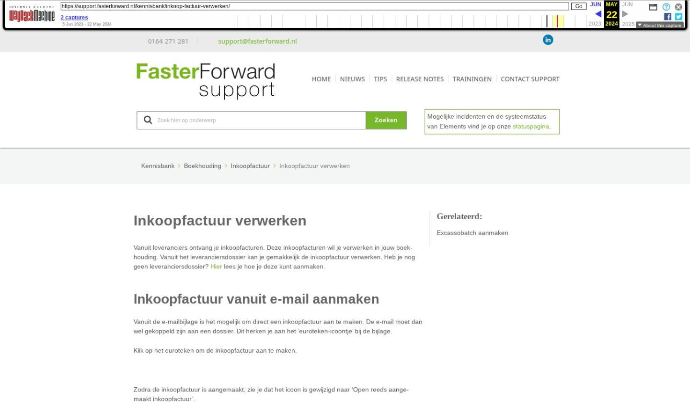

Inkoopfactuur verwerken

Tekstinhoud
Inkoopfactuur verwerken
Vanuit leveranciers ontvang je inkoopfacturen. Deze inkoopfacturen wil je verwerken in jouw boekhouding. Vanuit het leveranciersdossier kan je gemakkelijk de inkoopfactuur verwerken. Heb je nog geen leveranciersdossier? Hier lees je hoe je deze kunt aanmaken.
Inkoopfactuur vanuit e-mail aanmaken
Vanuit de e-mailbijlage is het mogelijk om direct een inkoopfactuur aan te maken. De e-mail moet dan wel gekoppeld zijn aan een dossier. Dit herken je aan het 'euroteken-icoontje' bij de bijlage.
Klik op het euroteken om de inkoopfactuur aan te maken.
Zodra de inkoopfactuur is aangemaakt, zie je dat het icoon is gewijzigd naar 'Open reeds aangemaakt inkoopfactuur'.
Let op: Reeds aangemaakte inkoopfacturen die niet gekoppeld zijn aan een dossier zijn niet meer te bewerken.
Inkoopfactuur handmatig toevoegen in een dossier
Hier vind je het stappenplan hoe je een inkoopfactuur handmatig kan toevoegen in een dossier.
Ga in het desbetreffende leveranciersdossier naar het tabblad financieel. Hieronder vind je een tabblad 'inkoopfactuur'.
Door middel van het plus icoon voeg je een inkoopfactuur toe. Vul alle verplichte (groene) velden in. Let op! De betalingsconditie mag niet 0 zijn.
Daarna is het mogelijk een digitale versie van de factuur (PDF) te uploaden door deze handmatig te uploaden.
Je krijgt vervolgens het resultaat te zien van voorgaande input.
In de factuurregel boek je de betreffende factuur. Meer informatie over het invoeren van boekstukregels vind je in het onderdeel "Invoeren boekingen". Als je klaar bent met invoeren slaat je op door middel van het opslaan knop rechtsonder.
Na opslaan verschijnt er een 2e tabblad "Workflow". Met behulp van de workflow kan de inkoopfactuur worden geboekt. Na boeken zal de factuur op 'onbewerkbaar' worden gezet, en wordt de workflow gedeactiveerd. Op de geselecteerde grootboekrekening kan de weggeboekte inkoopfactuur teruggevonden worden. Deze workflow kan echter ook de status of datum aanpassen. Voor de inrichting van deze workflow kunt u contact opnemen met support@fasterforward.nl
Bijlagen toevoegen aan bestaande inkoopfactuur
Daarnaast is het mogelijk om bijlagen vanuit een e-mail aan de bestaande inkoopfactuur toe te voegen. Klik hiervoor in de mail op 'aan e-mail klembord toevoegen'. Ga vervolgens in uw inkoopfactuur naar het tabblad 'documenten' en klik hier op 'Plakken uit klembord'.
Inkoopregister
In het inkoopregister vind je alle inkoopfacturen terug. In dit overzicht is het factuurnummer, omschrijving, factuurdatum, organisatie, behandelaar en status terug te vinden. Je kunt de facturen printen, wijzigen, verwijderen en direct naar het dossier gaan. Het inkoopregister is te vinden via Financieel – Inkoopfacturen – Inkoopregister.
Maak je nog geen gebruik van het inkoopregister en wil je hier wel graag gebruik van maken? Neem hiervoor contact op met onze Support afdeling, hiervoor dien je een e-mail te sturen naar support@fasterforward.nl
Laatste update: 5 januari 2024
Was deze informatie nuttig?
Ja Nee